Motion studies
The SH leaves home.
Three looping treatments of the transformaSHion wordmark. The SH slides out, turns, flips, and settles back into the name.
- slide
- turn
- flip
- home
Tracing paper
A sheet of tracing paper carries the SH out. The grid stays behind, and its empty place is drawn in dashes.


Moves, drawn
The three moves are annotated as they happen: a slide vector, a turn arc and a mirror line, with a caption naming each one.


Shadow and echo
No paper, no labels. A cast shadow and two trailing copies carry the same move, and an accent rule draws itself on landing.